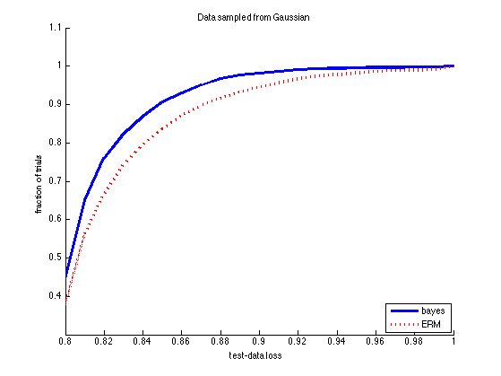
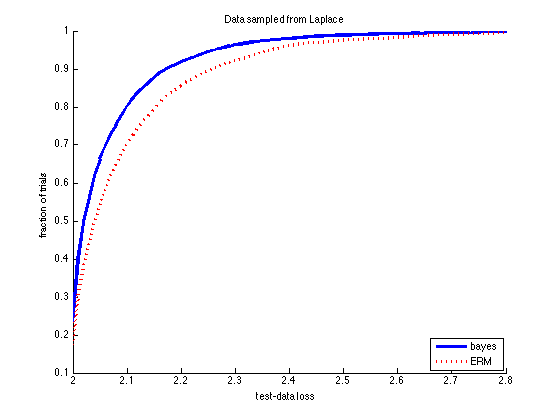

Contents
Compare Bayes and ERM
Based on Minka 2001 http://research.microsoft.com/en-us/um/people/minka/papers/erm.html
setSeed(0);
mu = 5; N = 20;
[styles, colors, symbols, str] = plotColors;
names = {'bayes', 'ERM'};
Gaussian case
for trial=1:5000 y=randn(1,N) + mu; yhat(1) = mean(y); % bayes yhat(2) = median(y); % ERM for i=1:2 risk(i,trial) = 2*normpdf(yhat(i), mu, 1) + ... 2*(mu-yhat(i))*normcdf(mu-yhat(i)) - (mu-yhat(i)); end end figure; hold on for i=1:2 bins = 0.01:0.01:1; b(i,:) = hist(risk(i,:), bins); c = normalize(b(i,:)); plot(bins, cumsum(c), styles{i}, 'color', colors(i), 'linewidth', 3); end legend(names, 'location', 'southeast') ylabel('fraction of trials') xlabel('test-data loss') set(gca, 'xlim', [0.8 1]) title('Data sampled from Gaussian') printPmtkFigure(sprintf('bayesVsErmDemoGauss'))
Laplace case
clear risk b for trial=1:5000 y=randraw('laplace', [mu, 1], N); yhat(1) = median(y); % bayes yhat(2) = mean(y); % ERM for i=1:2 risk(i,trial) = (mu-yhat(i))^2 + 2; end end figure; hold on for i=1:2 bins = 2.0:0.01:3; b(i,:) = hist(risk(i,:), bins); c = normalize(b(i,:)); plot(bins, cumsum(c), styles{i}, 'color', colors(i), 'linewidth', 3); end legend(names, 'location', 'southeast') ylabel('fraction of trials') xlabel('test-data loss') set(gca, 'xlim', [2 2.8]) title('Data sampled from Laplace') printPmtkFigure(sprintf('bayesVsErmDemoLaplace'))